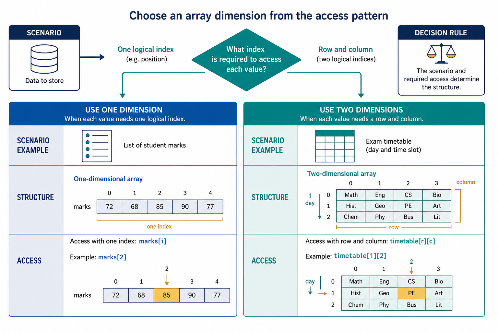

Select one- or two-dimensional arrays for a scenario: Choosing and combining data structures
Visual overview
Choose an array dimension from the access pattern

Visual transcript
- Use one dimension when each value needs one logical index.
- Use two dimensions when each value needs a row and column.
- The scenario and required access determine the structure.
Core explanation
Choose a one-dimensional array when each element needs one position, such as twenty marks or a list of names. Choose a two-dimensional array when each value naturally needs a row and a column, such as marks for several students across several tests. Do not choose 2D merely because there are many values.
An array is a collection of elements stored under one identifier. An index selects one element. The lower bound is the first valid index and the upper bound is the last valid index; both bounds are inclusive in a Cambridge declaration such as ARRAY[1:20] OF INTEGER.
A two-dimensional array uses two indexes, normally interpreted as row and column. In DECLARE Marks : ARRAY[1:30, 1:4] OF INTEGER, the first range gives 30 valid row indexes and the second gives 4 valid column indexes, for 120 cells.